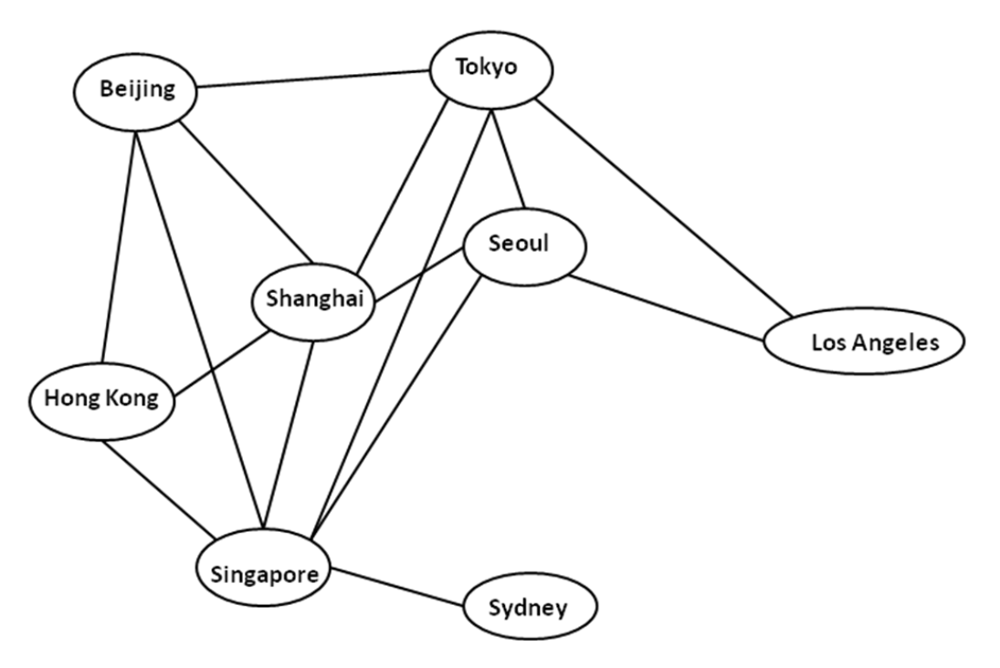

Example Class 4 (Week 11 – Week 12)
Please choose one of the following two projects (Project 4A or 4B):
Project 4A: Statistical and topological analysis of social networks
Write a program (in Java, C or C++) to analyze the statistical properties of a social network. For a node in a network (or graph), its degree is the number of other nodes connected with it. In this project, we will calculate and analyze the distribution of node degrees for a graph G that represents a social network, to see if G represents a “scale-free” network.
The following definition of "scale-free network" is from Wikipedia, and it is used in this project:
"A scale-free network is a network whose degree distribution follows a power law, at least asymptotically. That is, the fraction P(k) of nodes in the network having k connections to other nodes goes for large values of k as P(k) ∝ k-γ, where γ is a parameter whose value is typically in the range 2 < γ < 3 , although occasionally it may lie outside these bounds."
The project can be divided into the following steps:
-
Retrieve a real social network dataset of big size: You may use APIs of
some publicly available social networks. For example:
Also, you can choose a social network from SNAP.
A recommended network size is around 5000 nodes. But you may also choose other network sizes. Use either an adjacency matrix or an array of adjacency lists to represent the network. - Calculate node degrees: Design and implement an algorithm to calculate the degrees of all the nodes in the network.
- Study the distribution of node degrees: Plot a histogram for the node degrees in your network, where the variable on x-axis is k (i.e. the node degree), and the variable on y-axis is P(k) (i.e. the fraction of nodes having degree equal to k). Do curve fitting (e.g. using Microsoft Excel or R) of the power-law function to the data, choosing a value for γ that fits the data well.
In your report and presentation, please describe the above steps and results.
Project 4B: Application of BFS to flight scheduling
Construct an undirected graph to represent non-stop airline flights between cities in the world (a hypothetical graph for Asia Pacific is given below). In your graph, please add more cities and flights to make it more realistic. It should contain at least one pair of cities, between which there is no non-stop flight, but there is a route (or path) between them.
Implement the Breadth-first search (BFS) algorithm (using Java or C/C++) to find a route between two cities with the minimum number of stops. That is, when user inputs the names of two cities, your program should return one route with the smallest possible number of stop(s). If a non-stop flight is available, it will just return the departure city and arrival city.
In your report and presentation, please include a description and results of the following steps:
- Measure the CPU times of your program on graphs of different sizes, and analyze how the running times depend on the numbers of cities and non-stop flights.
- Explain whether Depth-first search (DFS) algorithm can be used in place of BFS, why or why not.
Note for Example class 4
Any student who has not done any presentation for his/her group must present.